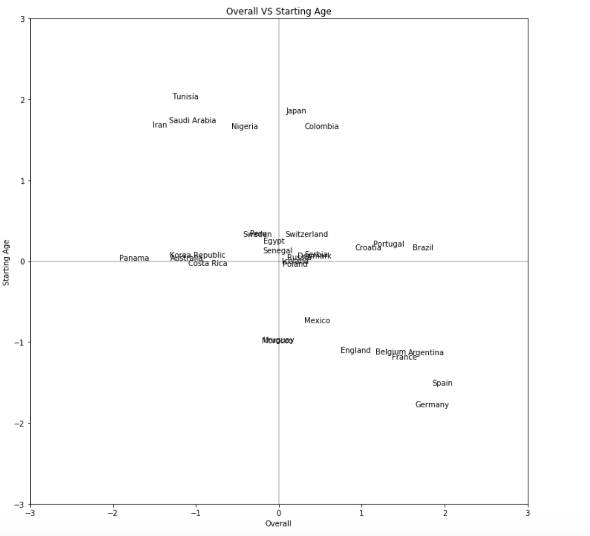
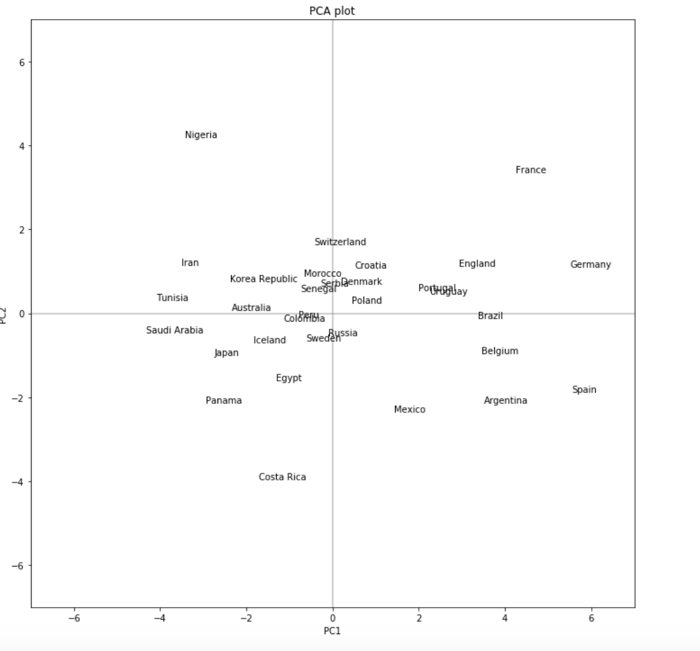
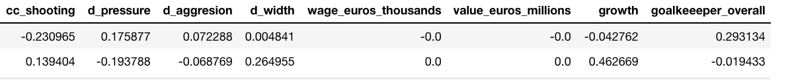
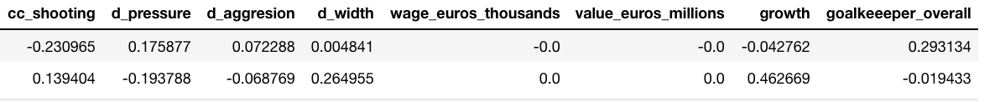

Exploratory Data Analysis¶
European Matches¶
For each match, we compute the average statistics for the different ratings for each team and difference them. Just getting the total value would not unfortunately work due to some rows potentially having uneven number of values missing. We then take the difference in the statistic for the home team and away team. For goal keeping ratings, we will only look at the max of each team since in theory the goal keepers in a match should have the best goal keeper statistics.
Now let’s see if there are any differences in the distributions of the differences depending on whether the home team lost, won, or tied.

Differences in the distributions
From looking at the mean, it seems in general the mean value for a difference in rating when the home team wins is the greatest out of the three outcomes while the mean value for the difference in rating when the home team loses is the lowest ouf the three outcomes. This seems consistent with what we believe. However, the mean differences seem a little low for any of these cases, especially since the rating ranges from 0 to 100, so mean differences of such small magnitudes might not be significant. Let’s plot the distributions themselves.

Distributions
Wow! From looking at the plots the distributions of a difference in rating among the three outcome do not really seem that different.
This might be an indication that using individual ratings and aggregating them might not be the way to go. Also, so far efforts to get the individual ratings for the actual World Cup data have been unsuccessful, so this may be a sign to find other set of features to predict the world cup. (Later we will see an attempt of using team statistics)
Let us also look at whether previous match results will be good predictors.

Previous matches
We see a similar pattern as before, where home team winning has the highest mean values and away team winning has the lowest mean values. This time the small magnitudes make sense however since we are only looking up to 5 games back. Let us also plot the distributions.
Distribution of previous matches
This time it is a bit more obvious that home team winning tends to have higher values. It seems like we can probably calculate some kind of momentum and utilize it as a predictor. We will explore more of this concept later on when we make our advanced model.
Conclusion From Europen Dataset¶
From exploration of the European dataset, we saw that aggregating individual player ratings does not seem to help that much while previous matches seem to help. Thus, we decided to only keep the summary statistics of the team rather than players’ individual statistics. We will keep these discoveries in mind as we move on to the SOFIFA datasets.
Further Exploring Other Features¶

Spearman
The spearman correlation plot gives us an idea of how well these features correlate with our dependent variable. In other words, the highly correlated features, such as overall difference in ratings should give us a fairly good idea of team 1/home team winning.
Distribution
In fact, from the distribution plot we see that the features, such as overall difference in ratings and goalkeeper rating difference, that can better discriminate win, loss for team 1 are more highly correlated with the win/lose. Similarly, features, such as build up dribbling difference, which have low correlation barely show any difference between distribution of different outcomes.

Box plot
Inspecting one of the highly correlated features closely, we see that when the difference is positive (team 1 has an advantage), the likelihood of winning is much higher whereas when it’s negative it’s much more likely to lose.

Wage Dist
However, there are also some features that don’t have really high correlation and can still discriminate well the win/lose situations when the difference is large. For instance, for the team wage difference, we see when the difference is large, it is much more likely to win/lose, but there is barely any difference in the middle peaking at 0. This is happening because we imputed missing values with 0 to encode lack of information. In fact, in these cases we have a lot of distributions with a really high peak at 0, causing low correlation. Nonetheless, they can still be useful when we do possess the information.
Exploring PCA¶
Inspecting these distribution of features, we noticed them a large proportion of them are similarly shaped and distributed. Therefore, we considered PCA to perform dimensionality reduction, aggregating similar features.

Summary¶
First of all, we notice that PCA helps models like LDA and QDA perhaps because of the independent assumption of components imposed by PCA. On the other hand, the performance for Logistic Regression, Random Forest, XGBoost seem to be slightly hurt by the reduced information from PCA.
Nonetheless, we see that the best model is QDA with 9 components from PCA. This probably means that performing dimensionality reduction is probably quite helpful in summarizing the information from the data with similar distributions. We will keep this in mind when picking the final model.
Interpreting PCA¶

Correlation Circle
We only highlighted the top 20 predictors with largest correlation magnitude as these are likely to be the more important predictors.
start_age_diff and full_age_diff are naturally correlated, and
seem to explain a substantial amount of variation in the data.
growth_diff, which is on the other side of the correlation circle,
seems to explain variation that is almost the opposite of
start_age_diff and full_age_diff. This makes intuitive sense as
we would expect younger players to have more room for growth.
attack_away_defence_home_diff and rank_diff also seem to be
explain similar variation in the data. The rest of the predictors are
all clustered at the 3 o’clock region of the circle, right across the
predictors attack_away_defence_home_diff and rank_diff. This
suggests that these predictors explain similar variation in the data and
might be correlated.
 
  

We can see that PC1 is greatly influenced by overall, defence,
and midfield, while PC2 is greatly influenced by full_age
(negative), start_age (negative), and growth. This gives us a
good way to think about the 2D representation of our dataset summarized
by the first two PCs. Teams with higher PC2s generally have lower ages
and thus more potential for growth. They are likely to have lots of
young, promising players. Teams with higher PC1s are statistically
better all-round teams.
While this PCA plot is not a measure of how likely a team will win the World Cup (since PCAs only involve the predictors), it can still give us an intuition into the various World Cup teams.
We immediately see that France is probably a strong all-round team that also has young, promising players. Nigeria is probably a below-average team but with young, promising players. Costa Rica is probably a below-average team with older players near their peak. Spain is probably a strong all-round team but with older players near their peak. These largely corroborates what we know about those teams.